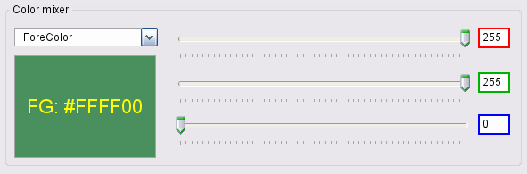

Properties
Inform Controls are manipulated with properties, and the following page covers these in detail, providing a omprehensive insight into their functions, configurations, and manipulations.
Properties overview
Controls are manipulated using the properties covered on this page. Please note that not all of these properties apply to every control. You can access a control's property by manipulating the Control() array. ControlID refers to a unique ID assigned to each control at load time.
At the beginning of the .bas program file generated by InForm, you will find the following section:
': This program uses
': InForm - GUI library for QB64 - v1.5
': Fellippe Heitor, 2016-2024 - fellippe@qb64.org - @fellippeheitor
': https://github.com/FellippeHeitor/InForm
'-----------------------------------------------------------
': Controls' IDs: ------------------------------------------------------------------
DIM SHARED Form1 AS LONG
DIM SHARED PictureBox1 AS LONG
The shared variables above contain the IDs of your controls, which you can utilize with the Control() array.
Syntax:
Control(ControlID).Property = Value
Note: Properties that you can directly manipulate are Caption, Text, Mask, and ToolTip properties.
They use separate arrays and must be used as follows:
Caption(ControlID) = "Desired Caption"
Text(ControlID) = "Desired Text"
Mask(ControlID) = "000-0000"
ToolTip(ControlID) = "Desired Tool tip"
To add a hot-key indicator to captions, use the SetCaption method.
Changes to properties are typically applied immediately, but eventually, you may need to use __UI_ForceRedraw.
BackStyle
Determines whether a control's background is opaque or transparent.
Control(ControlID).BackStyle = __UI_Opaque | __UI_Transparent
InForm sets some global constants that are user-accessible for BackStyle:
- __UI_Opaque
- __UI_Transparent
BorderSize
- All controls that accept the .HasBorder property can have their border size adjusted to up to 10 pixels.
Caption
Captions hold the text that is shown to the user on a control. For Textbox controls, a caption is displayed while the text field is still empty, serving as an indicator of the expected field content.
Captions are accessible via an array of variable-width STRINGs, using the control's ID:
Caption(ControlID) = "Caption contents"
To add a hot-key indicator to a caption, use the SetCaption method.
Color-properties
BackColor, ForeColor, SelectedForeColor and SelectedBackColor
The color properties hold _UNSIGNED LONG values, representing the _RGB32 color that will be used to display a control's caption or text. You can also pass color values directly using hexadecimal notation (using the prefix &H).
Foreground and background
Control(ControlID).ForeColor = _RGB32(Red%, Green%, Blue%)
Control(ControlID).BackColor = _RGB32(Red%, Green%, Blue%)
Selected items
The SelectedForeColor and SelectedBackColor properties refer to the colors used for selected items in lists and menus.
Control(ControlID).SelectedForeColor = _RGB32(Red%, Green%, Blue%)
Control(ControlID).SelectedBackColor = _RGB32(Red%, Green%, Blue%)
Border
Some controls can have a border around them, and you can change its color using the BorderColor property:
Control(ControlID).BorderColor = _RGB32(Red%, Green%, Blue%)
Disabled
The Disabled property indicates whether a control can be manipulated by the user.
Font
The Font property holds the handle of the loaded font associated with a control. It must be set using the SetFont method and cannot be directly manipulated with QB64's built-in font commands.
HasBorder
The HasBorder property determines whether a border will be drawn around a control's contents.
Control(ControlID).HasBorder = True
You can change the border color using the BorderColor property.
Control(ControlID).BorderColor = _RGB32(Red%, Green%, Blue%)
Hidden
The Hidden property of a control indicates whether it should be drawn or not.
Control(ControlID).Hidden = True Min and Max
The Min and Max properties indicate the minimum and maximum values that a control can manipulate ((such as Track bar and Progress bar), the maximum number of characters a TextBox control can hold, or, for a NumericTextBox control, it can be used to set the min/max bounds for input validation.
PasswordField
With the PasswordField property, you can mask the text entered by the user in a Textbox control using the Unicode character ● (UTF-8 e2978f).
You can set it at design time using the editor or at run time as follows:
Control(TextBox1).PasswordField = TrueA common practice is to associate a password textbox with a checkbox that allows the user to Hide/Show their input for quick spell checking.
Position-and-size
Top, Left, Width and Height
The Top, Left, Height and Width properties hold the coordinates and values to position controls on your form. These can be changed at runtime to reposition controls as needed.
Examples:
Control(Button1).Top = 10
Control(Button1).Left = 10
Control(Button1).Width = 100
Control(Button1).Height = 23
Stretch
The Stretch property indicates whether a loaded image will be stretched to fit a Picture Box control's area. If not set to True, the loaded image will be cropped if it's larger than the control's area.
Text
Texts are accessible via an array of variable-width STRINGs, using the control's ID:
Text(ControlID) = "Your text"Value
Returns the Value of a control (and allows setting it), according to the following list:
- For List and Dropdown List controls: Value indicates the selected item.
- For CheckBox, Radio Button, and Menu item controls: Value indicates whether the button is checked (True or -1) or not (False or 0).
- For Track bar controls: Value indicates the current value selected by the user.
- For Progress bar controls: Indicates the progress. The value can't be greater than the .Max property.
Align VAlign
To change how the contents of a label will be positioned.
The Align property determines whether the contents of a control will be horizontally aligned left, centered or right. This property is primarily intended to be used mainly for the Label control, but it can also be used to align a menu bar item to the right (only the last menu bar item).
The VAlign property determines whether the contents of a label will be vertically aligned to the top, middle, or bottom.
Applies to:
- Label
- Menus
Tool tip
Tool tips are shown when the user hovers over a control for longer than the preset time span and are used to give brief explanations of control assignments. They are accessible via an array of variable-width STRINGs, using the control's ID.
ToolTip(ControlID) = "Desired tool tip text"